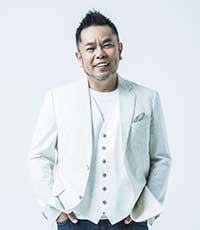
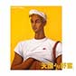

| 稲垣潤一 1953年7月9日生まれ、仙台市出身。中学時代から本格的なバンド活動を始める。 高校卒業後、ライブハウス、ディスコ、米軍キャンプなど様々な場所でライブ活動をする中、ドラムを叩きながらのボーカルというスタイルで注目を浴び、1982年「雨のリグレット」でデビュー。 「ドラマティック・レイン」（1982）や「夏のクラクション」（1983）、「クリスマスキャロルの頃には」（1992） 他。 2014年、ハコバン時代を再現した「稲垣潤一・叩き語りハコバン70’Sライブ」を行う。 2015年9月、ニューアルバム『男と女5』・書籍、自伝的小説第二弾『かだっぱり』同時発売。 1983年 日本レコード大賞 ベストアルバム賞「ＳＨＹＬＩＧＨＴＳ」 1986年 日本レコード大賞 ベストアルバム賞「ＲＥＡＬＩＳＴＩＣ」 1987年 TBS日本作曲大賞 大賞受賞「思い出のビーチクラブ」 1993年 日本ゴールドディスク大賞「クリスマスキャロルの頃には」 2009年 日本レコード大賞 企画賞受賞「男と女」・「男と女２」 2011年 第1回東北グッドエイジャー賞 2013年 講談社より「ハコバン70’ｓ」を出版 |
|  | 中西 圭三 1991年3月25日「タンジェリンアイズ」 でPioneer LDCよりデビュー。 ダンスボーカルユニット・ZOOに提供した「Choo Choo TRAIN」はJRのタイアップと共にミリオンヒット。 1992年、「Woman」「You and I」がカメリア・ダイアモンドのCMタイアップとともにヒット。 同年、「Woman」で日本レコード大賞・作曲賞を受賞。第 31 回NHK・紅白歌合戦へ出場。 2ndア ルバム「Yell」 3rdアルバム「Steps」 4thアルバム「STARTING OVER」はオリコンアルバムチャートNo.１に。 1995年以降はPeabo Bryson・Christina Aguileraなど海外アーティストとも楽曲をリリース。 Peabo Brysonに提供した「LIGHT THE WORLD」(デビーギブソンとのデュエット曲)が収録されたアルバムはグラミー賞にもノミネートされる。 2016/4/23 Motion Blue YOKOHAMAでの25th Anniversary Liveを皮切りに周年ライブをスタート。 6/29 丸の内Cotton Club、8/19 Billboard Live 大阪にてAll Time Bestライブ、9/7に2枚組ベスト盤「All Time Best ~KEIZO’s 25th NNIVERSARY~(30曲収録)をWarner music Japanよりリリース。 11/10 品川・ステラボールにて「祝宴 -UNITE! 全員集合!-」を開催。25周年スペシャルWebsite「圭三チャレンジ」を公開。「ベトナムフェス2016」ではベトナムの国民的歌姫Uyen Lihnとベトナム語でデュエットを敢行。様々なチャレンジを展開中。 |
| Max Lux エキゾチックな美貌のヴォーカル・ユニットMax Lux その哀愁をおびた美しいハーモニーが証す音楽的な実力。心を酔わせる美貌にくわえ、魂まで魅惑するようなエレガントさ。そして流暢な日本語から繰り出すユーモア。 観てワクワク！！聴いてゾクゾク！！セクシーな上にも底抜けに明るく楽しい、ロシア出身の 由緒正しき強力エンターテナー美女軍団です。 2012年彼女たちを六本木のライヴハウスで発見したTVプロデューサーが一目でその魅力と実力を見抜き、2012年10月〜2013年3月、明石家さんま氏が司会をつとめる「サタデー・ナイト・ライブJapan」のレギュラーに大抜擢。これを機に本格的な活動を開始。 ３人の出逢いを、音楽を通してエンターテナーとして組織したのは、 数々のヒット曲を世に送り出した作詞家・売野雅勇。 その売野雅勇と数々の若き才能たちがMax Luxをプロデュースしています。 2016年１１月売野雅勇３５周年記念アーティストとして ポニーキャニオンより、売野雅勇トリビュート・アルバム 『砂の果実 Fujiyama Pradise Tribute』 でデビュー。 |
【DISCOGRAPHY】
|  | 売野雅勇作詞活動35周年記念CD-BOX 『Masterpieces～PURE GOLD POPS～売野雅勇作品集「天国より野蛮」』 (ポニーキャニオン) ※2016年12月21日発売 |
稲垣潤一 『男と女5』 (ユニバーサルミュージック) |
中西圭三 『All Time Best~KEIZO’s 25th Anniversary』 (ワーナーミュージック ジャパン) |
Max Lux 『砂の果実 Fujiyama Paradise Tribute』 (ポニーキャニオン) |
【ARTIST OFFICIAL SITE】
稲垣潤一 : Official Site｜twitter
中西圭三 : Official Site｜25th Anniversary's Special Site｜twitter
MAXLUX : Official Site
稲垣潤一 : Official Site｜twitter
中西圭三 : Official Site｜25th Anniversary's Special Site｜twitter
MAXLUX : Official Site